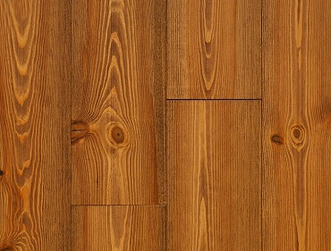
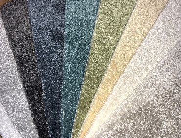
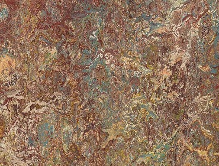

-

Vinylové podlahy
Vysoká odolnost, dlouhá životnost, snadná údržba, vhodné i do vlhkých prostor.
Vybraní výrobci: Gerflor, Fatra (Thermofix, Fatraclick, Vepo), Tarkett, Armstrong, IVC, Wicanders (Hydrocork)
-

PVC podlahy
Široká škála typů a dekorů, povrch beze spár, vysoká odolnost, snadná údržba.
Vybraní výrobci: Tarkett, Gerflor, IVC, Fatra, Arnstrong, Forbo, Baulieu
-

Dřevěné podlahy
Nezaměnitelný pocit při došlapu, přirozeně hřejivý pocit, vysoká trvanlivost, originální kresby přírodního materiálu, možnost volby povrchové úpravy.
Vybraní výrobci: Esco, Scheucher, Princ parket, Befag, Meister, Kährs
-

Koberce
Teplo a pohodlí při každém došlapu, do bytových i komerčních prostor, široký výběr typů a barev, možnost obšití.
Vybraní výrobci: Edel, Desso, Lano, Balta
-

Parkety
Přirozený přírodní vzhled, extrémně dlouhá životnost, možnost renovace, použití i do velmi zatěžovaných prostor, možnost volby povrchu.
Vybraní výrobci: Benko, Mosaic, Dřevopar
-

Přírodní linoleum
Přírodní podlaha v rolích, vhodná i pro alergiky, do všech typů místností, široká škála barev.
Vybraní výrobci: Forbo (Marmoleum), Tarkett, Armstrong, Meister
-

Plovoucí podlahy
Stále oblíbený druh podlahy. Velice snadná instalace, velké množství dekorů.
Vybraní výrobci: Egger, Meister, Kronoflooring, Kaindl
-

Příslušenství k podlahovým krytinám
Soklové, přechodové a ukončovací lišty. Podložky a doplňky k podlahovým krytinám.
Vybraní výrobci: Döllken, Bolta, K-produkt
-

Čistící a oštřovací prostředky
Mnoho typů čistících a ošetřovacích prostředků pro různé druhy podlahových krytin.
Vybraní výrobci: Dr. Schutz, RZ-systems, Bona (Bona mop)